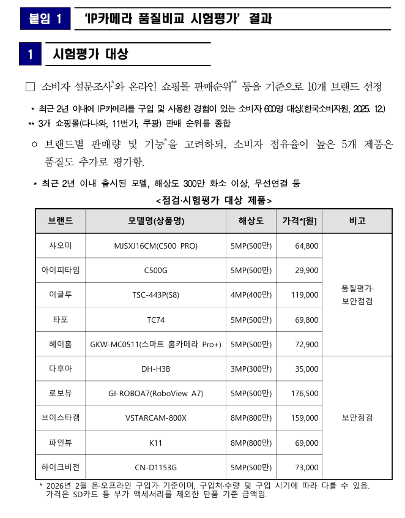
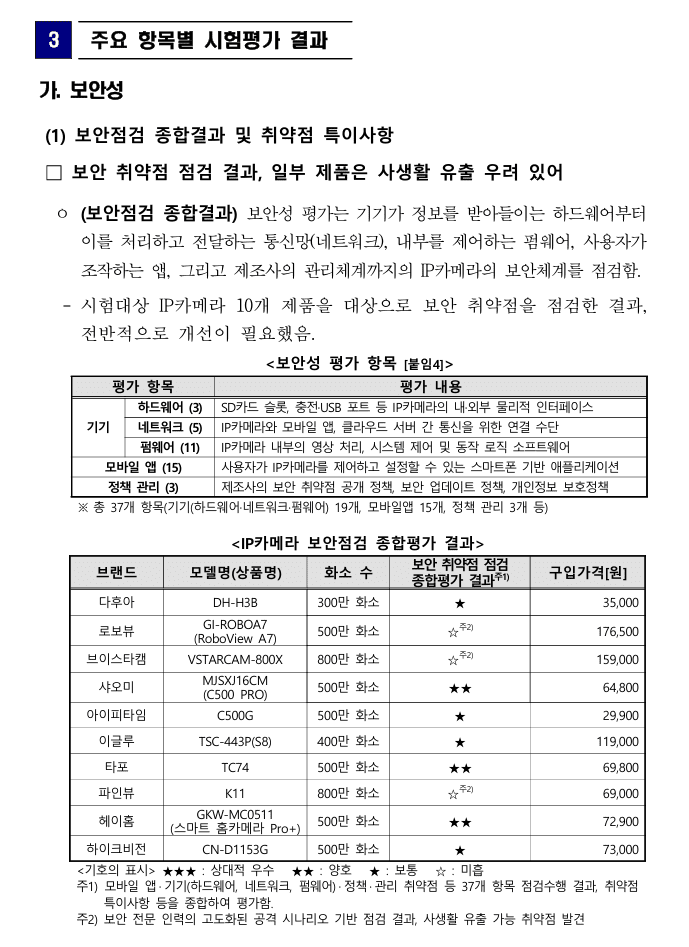
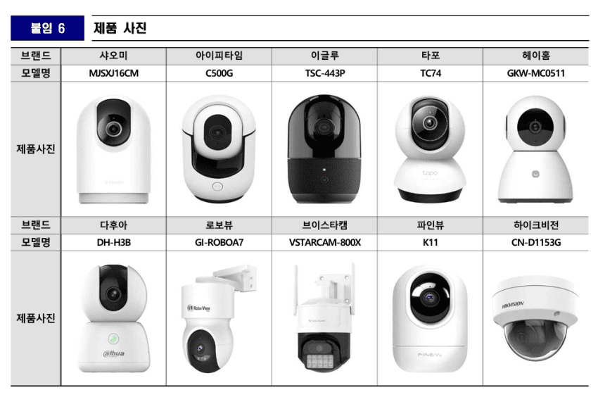
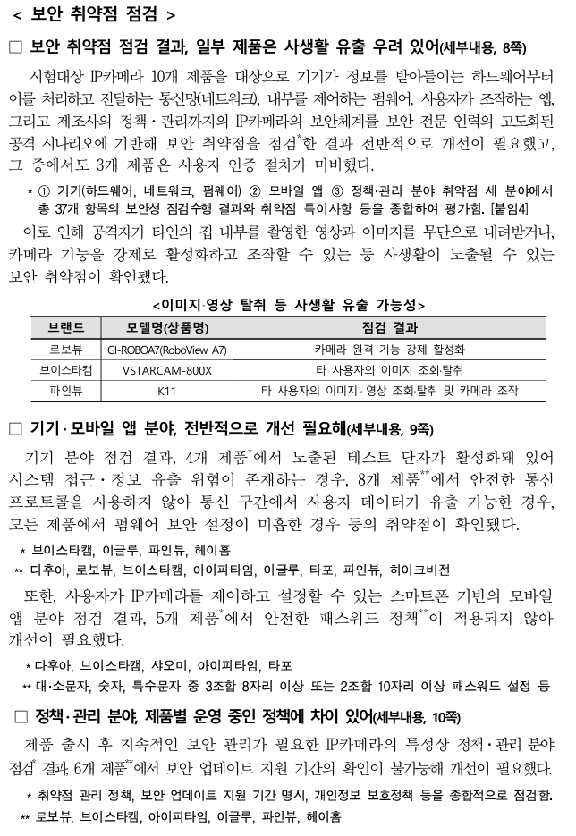
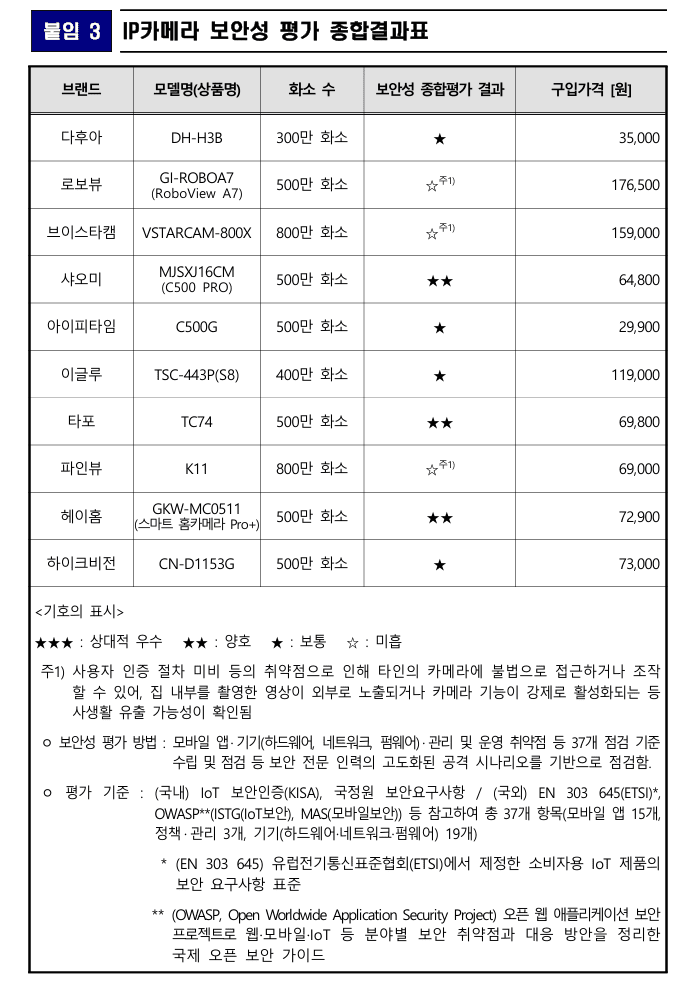
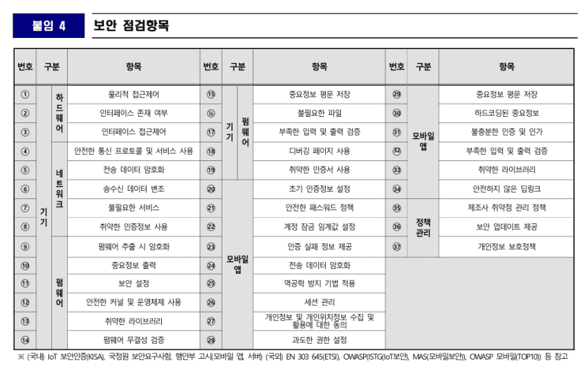

"사오미"
별점은 동점이 있긴한데, 평가내용은 샤오미가 사실상 보안 1위임 ㅋㅋㅋ
샤오미가 모바일앱에서 강력한 비밀번호 설정을 강제하지않는다
빼고 보안 다 통과, 다른데는 심각하건 아니건 다른지적사항들이 더있음 ㅋㅋ






"사오미"
별점은 동점이 있긴한데, 평가내용은 샤오미가 사실상 보안 1위임 ㅋㅋㅋ
샤오미가 모바일앱에서 강력한 비밀번호 설정을 강제하지않는다
빼고 보안 다 통과, 다른데는 심각하건 아니건 다른지적사항들이 더있음 ㅋㅋ


그정도
맞음!!


실베
절취선